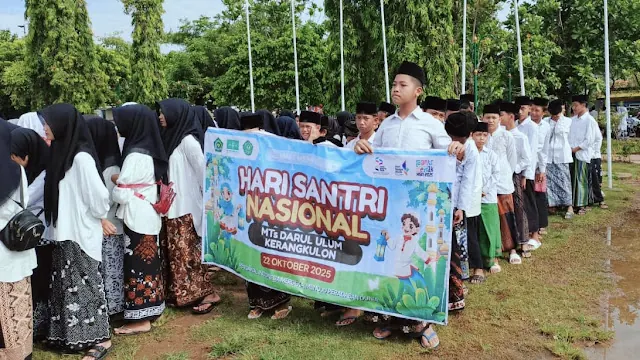

Pusat Peradaban Santri Kota Wali
Menyatukan langkah, mengawal tradisi salaf, dan membangun kemandirian ekosistem Pondok Pesantren se-Kabupaten Demak di era digitalisasi modern.
Peta Persebaran Lembaga
Sistem Geospasial RMI PCNU Demak
Sambutan Pimpinan Nahdlatul Ulama Demak
Meneguhkan khidmah mengawal tradisi salaf, menjaga kemurnian sanad keilmuan, dan memajukan peradaban santri Demak Kota Wali.

KH. M. Zainal Arifin Ma'shum
"Pesantren adalah benteng penjaga ruhani umat dan mata air sanad keilmuan Ahlussunnah wal Jama'ah. Teruslah mengistiqamahkan ngaji turots, merawat adab santri, serta menebarkan kesejukan dan kedamaian bagi Demak Kota Wali dan nusantara."

KH. M. Aminuddin, M.Si.
"Sinergi antara keteguhan tradisi salaf dan tata kelola digital adalah keniscayaan dakwah modern. Melalui portal satu data ini, kita satukan gerak langkah kelembagaan pesantren agar semakin mandiri, teratur secara administrasi, dan berdaya saing."

KH. Ibrahim Cholilullah, S.Pd.I.
"RMI berkhidmah sebagai jembatan pelindung dan pelayan bagi pesantren, madrasah diniyah, dan TPQ di 14 kecamatan. Sistem data geospasial ini hadir untuk memastikan setiap ikhtiar pendidikan tervalidasi dan mendapatkan perhatian yang layak."
Pilar Peradaban Pendidikan Keagamaan
Menjaga kemurnian sanad keilmuan, mengokohkan akhlaqul karimah, dan memperluas maslahat bagi masyarakat Demak Kota Wali.
Pondok Pesantren
Lembaga pendidikan Islam berakar tradisi nusantara untuk pendalaman ilmu agama (tafaqquh fiddin), kajian kitab kuning salaf, pembinaan kemandirian, dan khidmah sosial kemasyarakatan.
- check_circle Pengajian Turots & Sanad Keilmuan
- check_circle Pembiasaan Riyadhoh & Akhlakul Karimah
- check_circle Kemandirian Ekonomi & Poros Umat
Madrasah Diniyah
Jangkar transmisi syariat dan penguatan aqidah Ahlussunnah wal Jama'ah An-Nahdliyah. Membekali santri dengan penguasaan gramatika bahasa Arab (Nahwu-Shorof) dan fiqih aplikatif.
- check_circle Standarisasi Kurikulum PC RMI NU
- check_circle Ujian Bersama Lembaga se-Demak
- check_circle Penguatan Karakter & Adab Santri
Taman Pendidikan Al-Qur'an
Pondasi emas kecintaan anak pada Al-Qur'an. Berfokus pada makharijul huruf yang fasih, hukum tajwid yang tepat, hafalan juz 'amma, serta pembiasaan ibadah praktis sejak dini.
- check_circle Metode Yanbu'a & Qira'ati Tervalidasi
- check_circle Pembiasaan Doa Harian & Shalat Fardhu
- check_circle Wisuda & Sertifikasi Bersama
Warta Pesantren Demak

Ribuan Santri Demak Gelar Aksi Damai Solidaritas Pesantren Nusantara

PCNU Demak Matangkan Kurikulum Madrasah Diniyah Jelang Ujian

Pelatihan Manajemen Keuangan Koperasi Pesantren se-Demak
Rakorcab RMI NU Rumuskan Program Beasiswa Santri Unggulan
Profil RMI NU Demak
Mengenal susunan kepengurusan harian dan komitmen pengembangan ekosistem pesantren.
Sejarah & Khidmat
PC Rabithah Ma’ahid Islamiyah Nahdlatul Ulama (RMI-NU) Kabupaten Demak bertugas mengoordinasikan, menyatukan, dan mengawal regulasi pondok pesantren serta madrasah diniyah di bawah payung PCNU Demak. RMI berkomitmen menjaga nilai salafiyah serta melakukan reformasi administrasi digital.
Visi Organisasi
"Terwujudnya koordinasi tata kelola lembaga yang mandiri, bermartabat, unggul, serta berakar kuat pada tradisi keilmuan Aswaja An-Nahdliyah."
Struktur Kepengurusan & Bagan Komando
Jalur instruksi resmi, koordinasi administratif, dan pembagian bidang khidmat kepengurusan PC RMI NU Kabupaten Demak masa khidmat aktif.
KH. M. Zainal Arifin Ma'shum
Rais Syuriyah PCNU Demak
KH. M. Aminuddin, M.Si.
Ketua Tanfidziyah PCNU Demak
KH. Ibrahim Cholilullah, S.Pd.I.
Ketua PC RMI NU Kabupaten Demak
"Penanggung jawab kebijakan umum dan koordinasi pesantren se-Kabupaten Demak"
K. M. Nurul Huda
Wakil Ketua Bidang Kepesantrenan & Lembaga
K. Ahmad Badhawi Ali
Sekretaris
Tata kelola dokumen, persuratan & legalitas
Ust. M. Choirul Anam, S.Pd.
Wakil Sekretaris
KH. Farid Ubaidillah, S.Kom
Bendahara Umum
Pengawasan kas, anggaran & akuntabilitas
H. Ahmad Zaini
Wakil Bendahara
Gus Muhammad Ilyas
Pendidikan, Kurikulum & Turots
Standardisasi kurikulum kitab kuning salaf marhalah ula, wustha, dan ulya santri se-Demak.
K. Agus Mubarok
Kemandirian Ekonomi & Kopontren
Inkubasi usaha pesantren, badan usaha mandiri, dan penguatan jejaring Koperasi Pondok Pesantren.
Ust. Ahmad Nazirul, M.Kom.
Data, Media & Transformasi Digital
Arsitektur portal satu data, geospasial, keandalan sistem cloud, dan publikasi warta cabang.
Koordinator Wilayah 14 MWC NU Kecamatan
Mranggen, Sayung, Karangtengah, Bonang, Demak Kota, Wedung, Wonosalam, Dempet, Gajah, Karanganyar, Mijen, Guntur, Karangawen, Kebonagung
Direktori Lembaga
Database tervalidasi pendidikan keagamaan se-Kabupaten Demak
Pondok Pesantren
Wilayah Kab. DemakMenampilkan 380+ titik pesantren di seluruh wilayah Kabupaten Demak.
Pusat Layanan & Program RMI
Sistem satu pintu pelayanan digital interaktif dan pengembangan program unggulan bagi ekosistem Pesantren, Madin, dan TPQ se-Kabupaten Demak.
Lacak Status Lembaga & Berkas
Cek verifikasi NSPP, izin operasional, atau pengajuan RMI
Katalog Layanan Digital
Digitalisasi & Pendataan Terpadu
Mengelola ekosistem layanan digital seperti sistem Digdaya Pesantren untuk mempermudah akses beasiswa, program, rekomendasi, dan identitas digital pesantren.
Pengembangan & Penguatan Pesantren
Memfasilitasi pengembangan kapasitas lembaga, kurikulum, dan metode pendidikan agama agar relevan dengan perkembangan zaman.
Buka Layanan chevron_rightKemandirian Ekonomi Pesantren
Mendorong kewirausahaan and kemandirian finansial pondok pesantren melalui inkubasi bisnis and Kopontren.
Buka Layanan chevron_rightPemberdayaan Madrasah Diniyah
Menyelenggarakan pekan madaris, forum halaqah, dan evaluasi kegiatan keagamaan untuk meningkatkan kualitas pengajar dan santri.
Buka Layanan chevron_rightPeningkatan Mutu Guru Ngaji (TPQ)
Mengadakan pelatihan, tatar guru, dan pembekalan metode pengajaran Al-Qur'an khas NU seperti metode Annahdliyah.
Buka Layanan chevron_rightPengkaderan & Jaringan Santri
Menjadi pusat pengkaderan generasi NU yang tangguh melalui pendataan kegiatan seperti Hari Santri Nasional, Liga Santri, dan program Ayo Mondok.
Helpdesk Layanan
Kendala dalam pengajuan berkas digital atau pembaruan data sistem Digdaya Pesantren? Tim kami siap membantu.
Panduan Masuk Portal Data
Petunjuk resmi pendaftaran akun, tata cara masuk tanpa kata sandi (Email OTP), serta rincian hak akses modul untuk 7 peran pengelola ekosistem pesantren se-Kabupaten Demak.
Panduan Masuk Portal Data (7 Peran)
Standar Operasional Prosedur (SOP) pendaftaran akun, alur autentikasi tanpa sandi, serta matriks kewenangan modul pangkalan data Digdaya Pesantren PC RMI NU Kabupaten Demak.
1. Super Admin (PCNU Demak & Core IT)
LEVEL 1 • OTORITAS PENUHPenanggung jawab teknis basis data, otentikasi global, dan keandalan sistem.
Pengurus Cabang NU Demak (Ketua Tanfidziyah, Rais Syuriyah) dan Tim Teknis IT Core yang ditunjuk melalui SK resmi.
Akun diterbitkan secara internal oleh Tim IT melalui entri database aman master spreadsheet, tidak melalui registrasi umum.
Buka menu 1-Klik Akun (otomatis mengenali akun Google/email resmi terdaftar) atau verifikasi melalui Email OTP 6-Digit.
Akses penuh (Full Access) ke seluruh 11 modul: Manajemen Pengguna, Matriks RBAC, Audit Trail, Pengaturan Cabang, dan Basis Data.
2. Admin Kabupaten (Pengurus Harian PC RMI NU Demak)
LEVEL 2 • OPERASIONAL CABANGPengelola utama direktori, persetujuan verifikasi, dan rekapitulasi data tingkat kabupaten.
Ketua, Sekretaris, Bendahara, dan Pengurus Harian PC RMI NU Kabupaten Demak masa khidmat aktif.
Didaftarkan oleh Super Admin di modul Manajemen Pengguna dengan melampirkan email resmi dan nomor kontak dinas.
Masukkan email terdaftar pada tab Email OTP di menu Masuk Admin, lalu ketikkan 6 digit OTP yang dikirim ke email.
Menyetujui pendaftaran mandiri di Ruang Verifikasi, mengelola direktori pesantren se-Kabupaten, cetak laporan & buku induk.
3. Admin Kecamatan (Koordinator 14 MWC NU)
LEVEL 3 • SUPERVISI MWC WILAYAHPenanggung jawab koordinasi pendataan dan verifikasi lapangan pesantren di kecamatannya.
Pengurus MWC NU (Majelis Wakil Cabang) bidang kepesantrenan di 14 Kecamatan: Bonang, Demak, Dempet, Gajah, Guntur, Karanganyar, Karangawen, Karangtengah, Kebonagung, Mijen, Mranggen, Sayung, Wedung, dan Wonosalam.
Diterbitkan oleh Sekretariat PC RMI NU setelah rapat koordinasi MWC dengan menetapkan satu alamat email koordinator resmi per kecamatan.
Pilih tab Email OTP di portal admin, masukkan email koordinator MWC, dan verifikasi dengan kode 6 angka yang masuk di kotak pesan.
Akses terisolasi hanya untuk wilayah kecamatannya: memverifikasi surat rekomendasi MWC, memantau buku induk, dan melihat sebaran GIS kecamatannya.
4. Operator Pesantren (Sekretariat Pondok)
LEVEL 4 • ENTRI DATA MANDIRIUjung tombak pembaruan data buku induk, santri, kurikulum turots, dan sarana pondok.
Sekretaris Pondok, Operator EMIS / Data, Lurah Pondok, atau pengurus administrasi yang diberi amanah resmi oleh Pengasuh Pesantren.
Pendaftaran Mandiri: Klik tombol *"Daftarkan Lembaga Pesantren Baru"*, isi form wizard 4 langkah, unggah berkas rekomendasi MWC, lalu tunggu verifikasi cabang.
Setelah akun disetujui, login menggunakan Email OTP yang didaftarkan. Kode 6 digit akan masuk ke email pemohon secara aman.
Mengisi & memperbarui Buku Induk 9 Domain untuk pesantrennya sendiri (santri, dewan asatidz, kitab kuning marhalah, izin operasional, badan usaha).
5. Dewan Masyayikh / Pengasuh Pesantren
LEVEL 5 • EKSEKUTIF & KEILMUANPemantau keabsahan kurikulum turots, keilmuan, dan laporan eksekutif pesantren.
Khadimul Ma'had, Pimpinan Pondok Pesantren, atau Dewan Masyayikh yang tercantum pada piagam pendirian pondok.
Dibuatkan akun eksekutif oleh PC RMI NU atau otomatis didaftarkan bersamaan saat verifikasi pendaftaran mandiri pesantren disetujui.
Metode mudah tanpa sandi rumit: masukkan email pengasuh pada tab Email OTP, periksa 6 angka yang dikirimkan, dan langsung masuk.
Melihat status akreditasi dan verifikasi, memantau buku induk, meninjau kurikulum kitab turots dan rekapitulasi santri tanpa resiko salah ubah data.
6. Tim Asesor & Verifikator Lapangan
LEVEL 6 • VALIDASI FAKTUILPenilai kelayakan berkas, survei fisik lokasi, dan pemberian rekomendasi keanggotaan RMI.
Tim Khusus Asesmen dan Penjaminan Mutu yang dibentuk oleh Pengurus Cabang RMI NU Demak untuk akreditasi lembaga.
Didaftarkan secara terpusat oleh Admin Kabupaten melalui modul Pengguna dengan masa tugas verifikasi aktif.
Masuk melalui Email OTP dari browser smartphone maupun laptop saat berada di lokasi peninjauan pesantren.
Akses khusus ke Ruang Kerja Verifikasi: memeriksa lampiran piagam Kemenag, rekomendasi MWC, mengisi catatan borang lapangan, dan verifikasi titik koordinat GIS.
7. Tamu Terdaftar / Peneliti Eksternal
LEVEL 7 • AKSES TERBATASAkses peninjauan data agregat untuk riset akademis, instansi pemerintah, dan publik terdaftar.
Akademisi, peneliti universitas, mitra program beasiswa, instansi pemerintah (Kemenag/Pemkab), atau publik yang membutuhkan data riset.
Mengajukan permohonan akses riset melalui Sekretariat PC RMI NU Demak atau didaftarkan sebagai tamu peninjau.
Menggunakan Email OTP yang telah didaftarkan pada sistem izin riset.
Hanya dapat melihat (Read Only) data direktori terverifikasi, peta persebaran geospasial, dan referensi wilayah tanpa hak akses ubah data.
Cara Mudah Masuk ke Portal Administrasi RMI NU Demak
Pilih Tab Autentikasi
Gunakan tab 1-Klik Akun (Pengurus Terdaftar) atau tab Email OTP.
Terima Kode 6 Digit
Buka kotak masuk / spam email Anda untuk menyalin kode OTP resmi yang dikirimkan sistem.
Verifikasi & Masuk
Ketikkan 6 digit kode OTP dan sistem otomatis memuat menu sesuai hak akses peran Anda.
Belum memiliki akun pengelola atau pondok Anda belum terdaftar?
Matriks Hak Akses Modul Resmi (Overview RBAC)
| Nama Modul Sistem | Super Admin | Admin Kab. | Admin MWC | Operator Pondok | Pengasuh | Verifikator | Tamu / Riset |
|---|---|---|---|---|---|---|---|
| 1. Dashboard Utama & KPI | Full | Full | MWC Wilayah | Pondok Sendiri | Lihat | Lihat | - |
| 2. Direktori Pesantren | Full | Full | Lihat | Lihat | Lihat | Lihat | Lihat Publik |
| 3. Inisiasi Record Baru | Full | Full | Input MWC | Daftar Mandiri | - | Input Survei | - |
| 4. Ruang Kerja Verifikasi | Full | Approval SK | Validasi MWC | - | Lihat Status | Borang Lapangan | - |
| 5. Buku Induk 9 Domain | Full | Full | Pondok MWC | Pondok Sendiri | Lihat | Lihat | - |
| 6. Peta Geospasial GIS | Full | Full | Lihat | Lihat | Lihat | Lihat | Lihat |
| 7. Laporan & Statistik Cabang | Full | Full | Kecamatan | - | Eksekutif | - | - |
| 8. Manajemen Pengguna | Full | Kelola Akun | - | - | - | - | - |
| 9. Matriks Peran & RBAC | Full | Lihat | - | - | - | - | - |
| 10. Referensi 14 Kecamatan | Full | Full | Lihat | Lihat | Lihat | Lihat | Lihat |
| 11. Riwayat Audit Trail | Full | Lihat | - | - | - | - | - |
Sambang Pesantren Jilid II (2026)
Sowan Masyayikh, Konsolidasi Kelembagaan Pesantren & Madin, serta 5 Halaqah Serentak bersama Kafilah PW RMI NU Jawa Tengah di Kota Wali.
Menuju Pelaksanaan di PP Futuhiyyah
Wujud Nyata Kehadiran RMI untuk Ekosistem Pesantren & Madin
Pesantren dan Madrasah Diniyah merupakan pusat pendidikan, dakwah, dan pemberdayaan umat yang berakar kuat dalam tradisi dan nilai keislaman Ahlussunnah wal Jama’ah An-Nahdliyyah. Dalam rangka memperkuat peran strategis lembaga-lembaga tersebut, RMI PWNU Jawa Tengah menyelenggarakan program 'Sambang Pesantren' Jilid II sebagai sarana konsolidasi, dialog, pelatihan, dan pembinaan kelembagaan serta motivasi santri.
PC RMI NU Kabupaten Demak dengan penuh takzim menjadi tuan rumah pelaksana, memfasilitasi sowan akbar masyayikh, sinergi kelembagaan, serta membina musyrif/musyrifah dan pengelola media santri dari 14 kecamatan se-Kabupaten Demak.
target 6 Tujuan Strategis Program
- 1 Meningkatkan koordinasi dan konsolidasi antara RMI PWNU dan RMI PCNU.
- 2 Menjalin silaturahmi & dialog bersama pengasuh dan pengurus pesantren.
- 3 Menyampaikan edukasi terkait isu strategis: regulasi, pola asuh, & kemandirian.
- 4 Memberikan motivasi kepada para santri untuk terus belajar & berkhidmah.
- 5 Menyusun peta kebutuhan dan potensi pesantren secara partisipatif.
- 6 Pendataan, pembaruan, dan verifikasi faktual data Pesantren & Madin NU.
5 Pilar Kegiatan Utama
Dilaksanakan serentak di Pondok Pesantren Futuhiyyah Mranggen dengan membagi peserta ke dalam 5 halaqah tematik guna efektivitas diskusi dan pelatihan.
Konsolidasi & Koordinasi RMI PWNU dengan RMI PCNU
Penguatan sinergi struktural organisasi antara jajaran pengurus wilayah dengan cabang dalam mengawal tata kelola kelembagaan pesantren di daerah.
Konsolidasi Pengurus Bidang Madin RMI & Kepala Madin
Pertemuan khusus penguatan pangkalan data, legalitas, dan kemitraan madrasah diniyah takmiliyah bersama perwakilan Kepala Madin se-Kabupaten Demak.
Diskusi Kepengasuhan bersama Pengasuh Pesantren
Forum silaturahmi luhur masyayikh pengasuh pondok pesantren se-Kabupaten Demak bermusyawarah perihal regulasi dan kemaslahatan pola asuh santri.
Pelatihan Musyrif & Musyrifah Pesantren (2 Hari)
Pembekalan intensif selama 2 hari (Hari 1 daring/online, Hari 2 tatap muka luring di PP Futuhiyyah) bagi 50 musyrif putra dan 50 musyrifah putri pembina asrama pondok se-Kabupaten Demak.
Pelatihan Media Pesantren & Kreator Dakwah
Membekali pengurus bidang pengembangan media di pesantren se-Kabupaten Demak agar mahir memproduksi narasi dakwah wasathiyah yang menarik dan berdaya saing di era digital.
Pondok Pesantren Futuhiyyah Mranggen
Pondok Pesantren Futuhiyyah Mranggen merupakan salah satu pesantren induk tertua dan terkemuka di Kabupaten Demak dan Jawa Tengah. Dengan sejarah panjang khidmah keilmuan Islam Ahlussunnah wal Jama'ah yang didirikan oleh para Masyayikh mulia, PP Futuhiyyah siap menjadi tuan rumah yang ramah dan representatif bagi Kafilah PW RMI NU Jawa Tengah dan delegasi pondok se-Demak.
Jl. Suburan Timur No. 174, Suburan, Brumbung, Kec. Mranggen, Kabupaten Demak, Jawa Tengah 59567
meeting_room Kesiapan Sarana & Prasarana Sesuai Standar TOR:
Petunjuk Rute Kafilah Menuju Lokasi
Rombongan kafilah PW RMI NU Jawa Tengah dan peserta delegasi dari 14 kecamatan se-Demak dapat menjangkau lokasi melalui Jalan Raya Semarang-Purwodadi / Pasar Mranggen belok ke arah Jl. Suburan.
Pendaftaran Delegasi Pesantren & Madin se-Kab. Demak
Mohon perwakilan sekretariat pondok pesantren se-Kabupaten Demak melengkapi data delegasi berikut untuk ketertiban halaqah dan pencetakan kartu tanda peserta resmi.
Registrasi Mandiri Delegasi 5 Halaqah
Kuota per halaqah: 50–100 peserta sesuai kapasitas.
Dokumen Resmi & Saluran Komunikasi Panitia Lokal
Untuk koordinasi lebih lanjut terkait kepesertaan dan sarana halaqah, silakan hubungi tim panitia pelaksana PC RMI NU Kabupaten Demak.
Warta & Kabar Pesantren
RMI NU Demak Siapkan Program Beasiswa Santri 2026 ke Timur Tengah
Workshop Kurikulum Kitab Kuning Digital
Optimalisasi Koperasi Pesantren se-Kecamatan Sayung
Berita Reguler
Penyerahan Bantuan Sanitasi Sehat untuk 10 Pondok Pesantren
Pemerintah Kabupaten Demak bekerja sama dengan PCNU menyalurkan bantuan fasilitas sanitasi untuk meningkatkan standar kesehatan santri mukim.
Ratusan Santri Ikuti Pelatihan Mitigasi Bencana Banjir Rob
Sebagai langkah antisipasi terhadap fenomena alam di pesisir Demak, RMI membekali santri dengan kemampuan tanggap darurat bencana berbasis masjid.
Peluncuran Antologi Puisi dan Esai Karya Santriwati Demak
Sebuah pembuktian bahwa budaya literasi dan kesusastraan di kalangan pondok pesantren perempuan terus berkembang pesat.